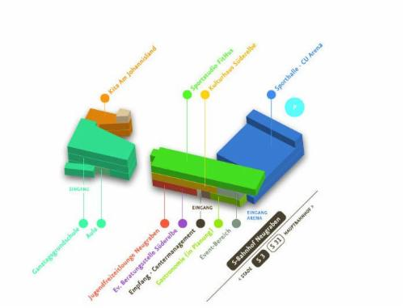
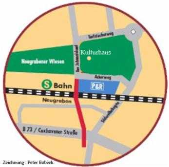

Kulturhaus Süderelbe e.V.
Im BGZ Süderelbe
Am Johannisland 2 (I OG)
21147 Hamburg
Tel. 7967222
Direkt am S-Bahnhof Neugraben (S3/S31) gelegen, ist das Kulturhaus sehr gut zu erreichen.
Falls die Straße "Am Johannisland" bei Google-Maps noch nicht zu finden sein sollte: "Ackerweg 21147 Hamburg" eingeben.
